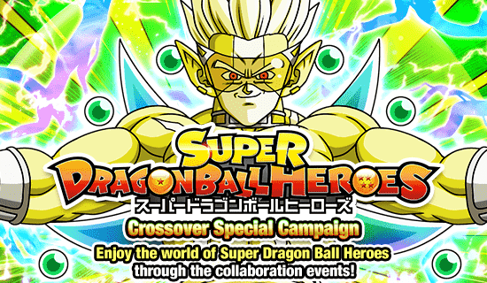
Como chegamos tão perto de uma celebração decente, mas ela conseguiu não ser?
Cards lindos, primeiro personagem do Heroes com Active Skill e tudo.. pena que zuaram os cards em si
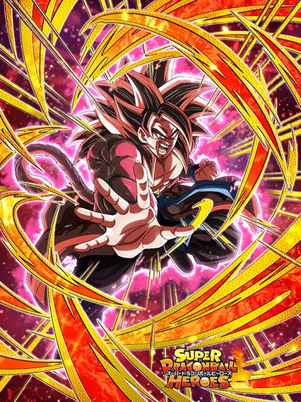
Arte linda, card contraditório.
Esse cara em essência era pra ser um card de slot 1, mas o kit dele tem tantas contradições que fica difícil
Pra começar, ele ganha um pedaço da defesa (que já não é muita) no Super Attack, sendo que ele quer que você tome 7 golpes pra ter mais um pouco de ATK e DEF
Não só isso, mas ele ganha 30% de redução de dano mas só se todos os aliados no turno forem Full Power ou Dragon Ball Heroes ESPECIFICAMENTE SUPER CLASS
Ou seja, você basicamente não pode usar o Hearts, o Vegeta e esse cara no mesmo time, muito genial
Caso ele tome os 7 ataques, ele fica um pouco melhor e até dá crítico garantido, oq é legal
Ele tmb dá 40% de DEF pra Super Class se tiver um Vegeta no turno, oq é legal
Só que pra levar esses 7 ataques que ele quer, você tá apostando muito na sorte e corre riscos constantes
E num time fraco como esse, não dá pra ter isso num personagem.
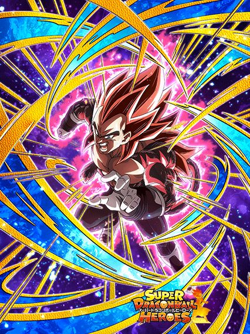
Arte linda, card meio uhhhhhh???
Se o Goku já tá meio preocupante, esse cara tá pior ainda
Esse cara tem partes da passiva "opostas" a do Goku, por exemplo, o Vegeta dá suporte 40% de ATK, ao invés dos 40% de DEF do Goku
E como o Goku tem redução de dano.. hahahaha que engraçado seria se o Vegeta fosse pior defensivamente
ELE LANÇA UM SUPER ADICIONAL GUYS, QUE INCRÍVEL
A única "vantagem" que esse cara tem comparado com o Goku é que a buildagem que ele tem é feita dando 5 Super Attacks, então ele não precisa tomar golpes e ficar em situações perigosas
Mas no final das contas todo lugar fica perigoso pra esse cara.. complicado
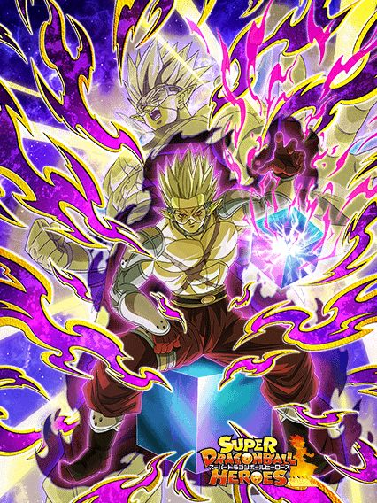
Jamais pergunte a um jogador do Global sobre o "incidente do Hearts".
Bom, pelo menos ele é um personagem vilão que quer ser usado com outros vilões e não perde todo o valor se não estiver num time específico
Ele tem defesa ativa pelos primeiros 5 turnos, dá 30% de ATK e DEF pra Extreme Class, além de ganhar +50% de DEF quando levar um golpe
E tudo isso de graça, sem restrição nenhuma
Era tão difícil não encherem os SSJ4s de coisa chata?
Bom.. se todos aliados forem Extreme Class, ele pode usar a Active Skill dele a partir do turno 3..
O primeiro personagem do Heroes a ter uma Active Skill.. certamente nada daria errado e todos iríamos ouvir a voz do Dio Brando, né?
Bom, eles alteraram um pouco o diálogo do Hearts, tá aqui o roteiro do que ele diz:
"⠀⠀⠀⠀⠀⠀⠀⠀⠀⠀⠀⠀"
Se você não entendeu, é isso mesmo que parece, o Hearts simplesmente não tem voz no Global, mesmo que a linguagem das falas esteja no original Japonês, eles removeram as falas dele
Portanto, a voz do Dio é exclusiva do JP.. fazer oq né
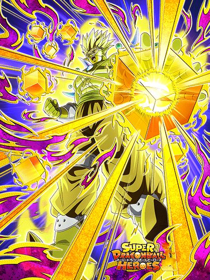
O mundo seria melhor se tivessem mais cards como o Hearts
O mano tem Big Bad Bosses, defesa ativa por 1 turno, fica efetivo se tiver um inimigo Realm of Gods.. tudo que os SSJ4s adorariam ter pra ajudar, mas fazer o que
Eu não acho injusto, até pq vilões precisam de mais buffs obviamente
Além do mais, as animações e a OST desse cara são muito boas
É genuinamente uma pena que ele não tem voz no Global.. quem sabe um dia eles arrumam né
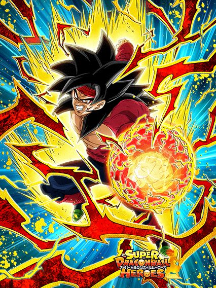
Bro quer que de algum jeito você não perca HP a luta inteira.
Esse cara é todo focado em restrições de HP e isso é bem chato, não dá pra mentir
Se o HP estiver acima de 50%, ele ganha +100% de ATK e DEF
Se estiver acima de 70%, ele fica super efetivo
E se estiver acima de 90%, ele dá critico garantido
Assim, considerando a dificuldade dos eventos e as condições zuadas do time Heroes, eu diria que você ver esse cara com força total é bem difícil
Se alguma coisa ajuda, é ele ter 30% de chance de desvio se tiver outro Giant Ape Power no turno, o que não é difícil
E sim, a chance é horrorosa, mas talvez melhore quando ele ganhar um EZA no futuro
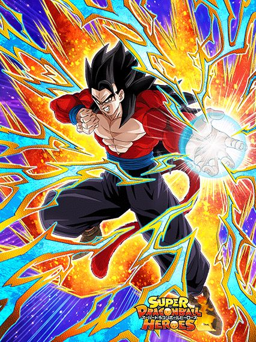
Não dá dano, mas é usável.
Eu não tou nem brincando quando digo que o ÚNICO fator relevante desse card é ele ter 50% de redução de dano caso tenham 2 aliados Giant Ape Power no time
É literalmente só isso
O dano dele é ruim, quase inexistente
Não tem crítico, adicional, nem nada
Pelo menos ele tanka..
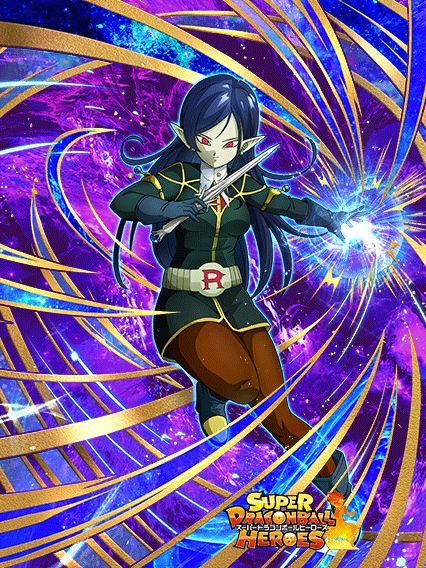
Eu acho ela muito maneira.
A Robelu é uma suporte pro time e ela genuinamente faz um bom trabalho
Ela tem 50% de chance de desvio e muda orbs pra rainbow sem condições, e isso já é muito valioso
Com um aliado Dragon Ball Heroes, ela ganha 10% de DEF e cura 5% de HP por rainbow orb pega, além de ter 70% de chance de ativar um scouter no turno
O único problema dessa habilidade é que, caso não apareça nenhum Super do inimigo no turno, tem a chance aleatória de ele realmente não dar Super ou do scouter não ter ativado, então boa sorte
Em geral, eu acho ela uma ótima personagem, provavelmente a melhor desses Dokkan Awakenings.
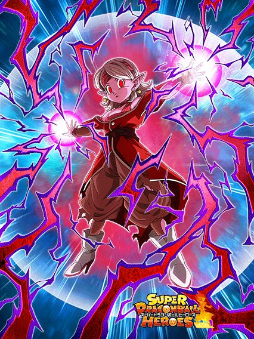
Debuffe o inimigo ou vc não tem passiva.
A Chronoa tem sérios problemas defensivos mas vira uma bomba nuclear se o boss puder levar todo tipo de debuff
Cada debuff no boss dá +100% de ATK pra ela, totalizando +400% de ATK se o boss tiver o ATK e DEF debuffados, estiver selado e stunado ao mesmo tempo
Ela consegue dar um bom dano, e sinceramente, se o boss conseguir ser stunado, a defesa dela fica meio irrelevante né
Infelizmente 90% dos bosses difíceis não podem ser debuffados de nenhuma forma, tornando ela quase inútil.
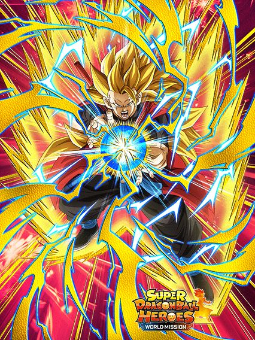
Um EZA bom, obrigado Akatsuki.
Com 5 aliados Dragon Ball Heroes, esse cara consegue chegar em 35% de redução de dano e 100% de DEF a mais
Além disso, ele tem defesa ativa permanente e 15% de redução de dano nos primeiros 3 turnos dele
Um tank bom e confiável pro time, tá ótimo já, pq é disso que o time precisa.
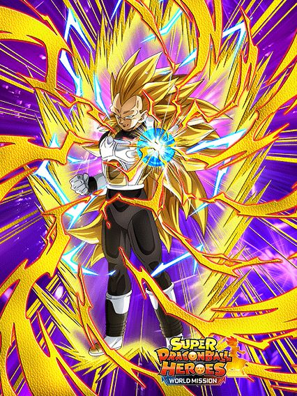
Guys, ELE DÁ DANO.
Q foi? Não tá impressionado com isso??
Esse cara só dá dano e acabou
Ao invés de ganhar DEF e redução de dano igual ao Goku, esse cara ganha 100% de ATK e 35% de chance de crítico com 5 Dragon Ball Heroes no time
É genuinamente triste, esse cara é feito de papel.
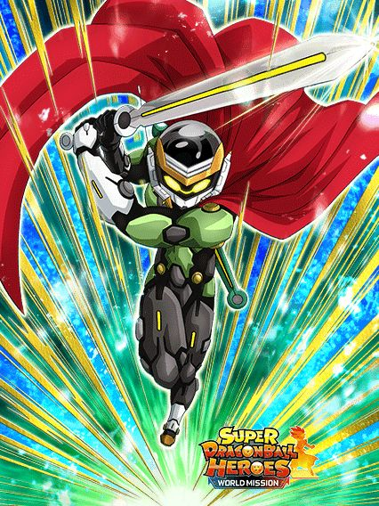
Bro tentou sozinho trazer de volta o meta de counters, muito brabo
Além de ele ter 30% de redução de dano contra ataques normais e até ganhar mais stats por causa do EZA, ele por algum motivo ainda perde 30% de DEF quando leva o primeiro golpe no turno
Ele pelo menos consegue dar um dano decente com os críticos dele..
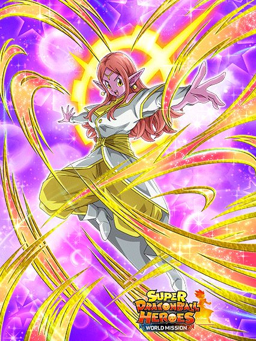
Boa suporte, o problema é que ela é só isso.
A Chronoa é uma ótima suporte pra qualquer time, e não só pra Dragon Ball Heroes
Ela dá 40% de ATK e DEF e 12% de chance de crítico de graça pra qualquer personagem, além de ter 70% de chance de aumentar o suporte pra 52% de ATK e DEF
O único problema é que essa é a passiva dela inteira, ela não tem nada que ajude ela mesma a sobreviver numa luta
Ela até cura 12% de HP depois de receber um golpe, mas ela tem que sobreviver ao golpe né 💀
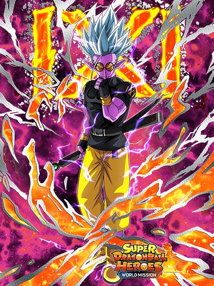
Bom personagem.
Esse cara é bem útil por ter 50% de chance de desvio caso tenham 5 aliados Time Travelers no time, o que é bem tranquilo
Além disso, a defesa dele é aceitável e o dano dele é muito bom
Em geral, ótimo EZA, pena q ele não tem Big Bad Bosses
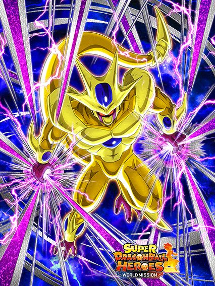
50% de chance de ele ser um personagem bom ou virar a Chronoa TEQ versão vilão
O Cooler é interessante, já que ele dá 20% de ATK e DEF pra todo mundo e +20% pra Dragon Ball Heroes
Além de ele ser um bom suporte, ele stacka ATK, e ganha 10% de redução de dano por Super Attack feito no turno, chegando à 30% total
Pra ajudar nisso, ele lança 2 adicionais, ambos com 50% de chance de serem Supers
E note que a redução de dano só é ganha se forem Supers, então é, ele vai ter turnos muito bons, maa também vai ter turnos horríveis 💀
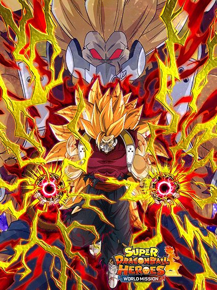 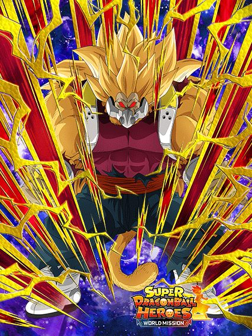
Personagem de dano genérico
Ele só dá dano, e é isso
Ele até ganha 50% de DEF depois de levar 1 golpe no turno mas esse 1 golpe já deve matar ele, complicado
Ele dá crítico garantido se o inimigo estiver stunado, o que pode ser útil pra alguma Super Battle Road
E ele transformado só tem +3 de Ki, nada de especial
E ele só se transforma se estiver abaixo de 50% de HP..
Acho que esse é o EZA mais sem sal de todos da celebração
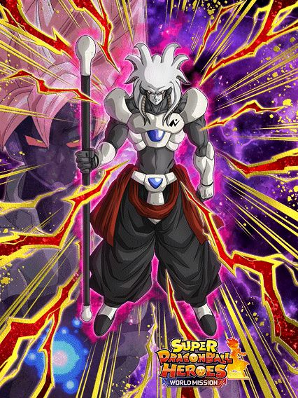
Não ironicamente pode ser um buff pro Cooler LR.
Esse cara não tem nenhuma restrição de time nem nada, tem Big Bad Bosses e está em Terrifying Conquerors, então ele tecnicamente funciona no time do Cooler
Além disso, ele tem 50% de chance de desvio e é até suporte de 20% de ATK e DEF pra Time Travelers e outros 20% pra Artificial Life Forms
Infelizmente, ele se transforma automaticamente passando do turno 5, o que é triste, pois ele assim é bem melhor q ele transformado..
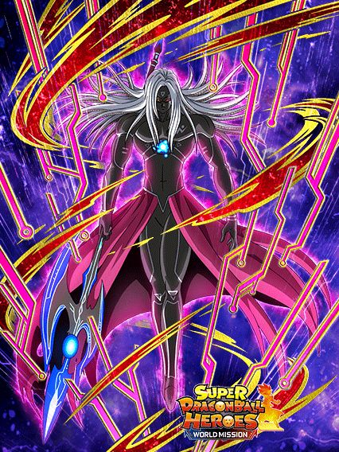
Agora ele dá dano
Esse cara tem uma arte muito linda slk, brabo demais
Enfim, ele builda um pouquinho de ATK e DEF atacando 3 vezes, lança um adicional com 50% de chance de ser um Super Attack, e dá crítico garantido se o inimigo tiver debuffado
Em geral, ele é um personagem de dano comum
Ainda prefiro mais a forma base dele..
Mó galera aqui slk kkkkkk
A maioria desses F2Ps não tem utilidade mas fazer oq né
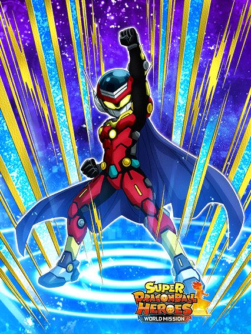
Personagem de dano.
É, nada de muito surpreendente aqui
Pelo menos ele dá 30% de DEF pra Super Class e mais 30% de ATK pra Youth, mas em que time vc vai encaixar esse jovem de qualquer jeito?
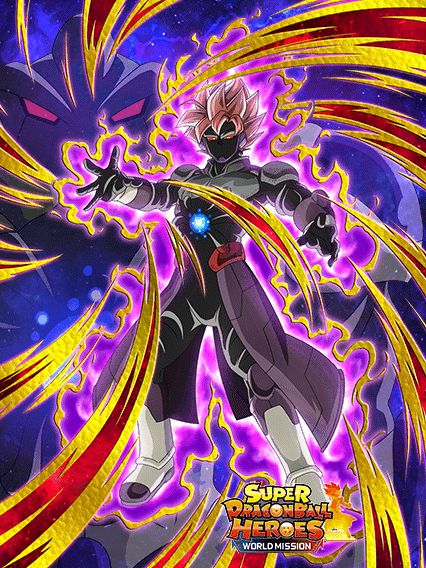
Como se pronuncia o nome desse cara mesmo?
Esse cara é bem intankavel literalmente kkkkk
Ele builda 150% de DEF, mas levando 5 ataques
Um PERSONAGEM F2P que precisa LEVAR ATAQUES PRA TER DEFESA
Complicado.
Pelo menos ele dá 30% de DEF pra Extreme Class e mais 30% de ATK pra Artificial Life Forms..
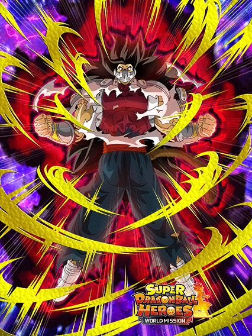
ESSE CARA quer q vc ponha ele no slot 1.
O Kanba lança um Super Attack adicional se ele levar um golpe no slot 1, e ele stacka míseros 20% de ATK e DEF por Super
Certamente ele vai conseguir stackar tanto que vai virar uma parede, né?
Não, não vai.
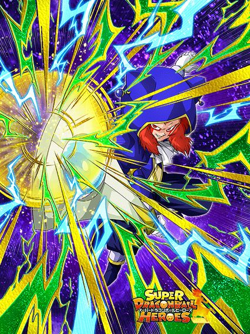
Ele é útil na Ultimate Clash.
Esse cara até consegue ser competente se tiverem muitos inimigos pra enfrentar, já que ele chega até 45% de chance de desvio com 3 aliados Crossover no time, e ganha mais 5% por inimigo
Enfrentando 5 inimigos na melhor condição, um card F2P consegue ter 70% de chance de desvio, o que é até que bem impressionante
Enfim, a única real utilidade desse cara é que ele sela Supers no Super Attack dele, sendo uma boa opção pra um time Extreme TEQ ou sei lá
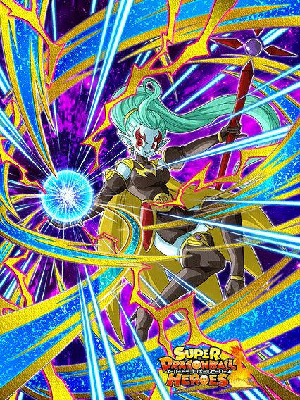
Boa parceira de link pra Robelu.
Ela é uma boa debuffer/suporte, tendo um dano aceitável pra uma F2P, 50% de chance de stun no Super Attack e linka bem com as Towas e a Robelu, bem interessante
30% de ATK e DEF pra Crossover e ainda debuffa e sela o Super Attack do inimigo só de encostar nele, não precisa nem fazer um Super Attack
Boa F2P, até a animação no Super dela é boa
Em geral, personagem útil.
E é isso.
Slk, teve muita coisa nessa página, e muita coisa mid infelizmente
Você chegou ao fim dessa página!
Obrigado por ler tudo, e fica a vontade pra ver outras